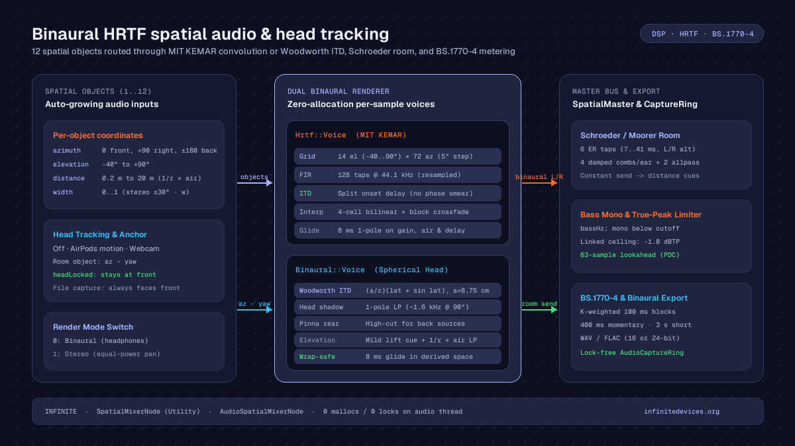

Product
Binaural HRTF spatial audio and head tracking in real-time DSP
How Infinite's Spatial Mixer renders 12 3D audio objects on the audio thread with MIT KEMAR HRTF convolution, Woodworth ITD, head tracking, and BS.1770-4 metering.

on this page
Spatial audio tools usually force a trade-off between offline film-post suites and fixed browser nodes such as WebAudio's PannerNode. Recent open-source audio projects on Linux and in DAW plugins, from PipeWire spatial effects chains to cross-platform CLAP and VST3 instruments, show growing interest in object-based mixing that runs cleanly inside a normal modular patch without proprietary hardware or external render servers.
In Infinite, the Spatial Mixer node (SpatialMixerNode in the Utility palette) mixes up to 12 mono or stereo audio objects in 3D space on a lock-free audio thread. Each object carries azimuth, elevation, distance, stereo width, and a head-lock toggle, and can be rendered through either a measured MIT KEMAR HRTF dataset or a parametric spherical-head model before hitting a shared Schroeder room, bass-mono crossover, lookahead true-peak limiter, and ITU-R BS.1770-4 loudness meter.

Why real-time binaural audio needs two renderers
A binaural mixer has to satisfy two conflicting requirements: realistic externalisation on headphones and predictable, low-CPU behaviour when a musician modulates 12 moving sound sources at once. Spatial Mixer keeps both options inside the same SpatialRenderer class so switching hrtf never rebuilds the graph:
- Measured KEMAR HRTF (
Hrtf::Voice,hrtf = 0): Uses a baked diffuse-field equalised MIT KEMAR impulse-response grid for natural pinna colouration and front-back differentiation. - Parametric spherical-head model (
Binaural::Voice,hrtf = 1): Computes analytical interaural time and level cues from a spherical head geometry with minimal CPU cost and zero FIR convolution. - Speaker-safe stereo mode (
renderMode = 1): Bypasses ear filtering altogether and applies equal-power panning with1/rdistance attenuation so a patch translates cleanly to studio monitors.
Every object slot (kMaxSlots = 12) allocates its voice pairs during PrepareToPlay() on the main thread. Unconnected slots are skipped immediately on the audio thread with near-zero overhead, and stereo inputs with width > 0.001 split into left and right virtual sources spread ±30° * width around the object's azimuth.
MIT KEMAR HRTF convolution without phase smear
Naive HRTF implementations interpolate directly between two measured impulse responses in the time domain. Because left and right ear responses arrive at different onset times, linear interpolation between two impulses with different delays creates comb-filtering and smears the interaural time difference (ITD).
HrtfKemar avoids that artefact by storing per-ear onset delays (kDelay) separately from the aligned 128-tap FIR impulse responses (kIr). The baked grid spans 14 elevation rows (-40° to +90° in 10° steps) and 72 azimuth columns (0° to 355° in 5° steps) at 44.1 kHz. When the audio device runs at 48 kHz or 96 kHz, Hrtf::Set::Get(sampleRate) resamples and caches the entire grid on the main thread once, leaving the audio thread strictly read-only.
During playback, Hrtf::Voice performs bilinear interpolation across the four nearest grid cells for both the aligned FIR taps and the separate onset delays. Whenever an object's azimuth or elevation moves by more than 0.01°, the voice writes the new target into mNxt, crossfades from mCur over the current audio block (mFadeLen), and smooths gain, air-absorption cutoff, and fractional delay with an ~8 ms one-pole glide.
Parametric spherical-head model and azimuth wrapping
When hrtf is set to the parametric model, Binaural::ComputeTarget() derives ear cues from a sphere of radius 0.0875 m and speed of sound 343.0 m/s:
- Woodworth ITD: Lateral angle
lat = asin(sin(az) * cos(el))yields the interaural delay(a / c) * (|lat| + sin(|lat|)), applied to the far ear via a 256-sample fractional delay ring. - Rayleigh head shadow: The far ear passes through a one-pole low-pass filter that drops to roughly
1.6 kHzat90°, while gain spans roughly10 dBbetween near and far ears. - Rear pinna cut and air absorption: Sources behind the listener receive a
3 kHzhigh-cut scaled bybackCut, and sources beyond1.0 mattenuate as1 / distancewith an air-absorption low-pass.
Because Binaural::Voice glides in derived cue space (delay, gain, cutoff) rather than interpolating raw azimuth angles, an LFO or modulator wrapping an object from +179° to -179° crosses the rear meridian smoothly instead of whipping through the front. You can drive any object's azimuth, elevation, or distance from modulators or audio-analysis nodes in the Infinite node library, or host the entire spatial patch inside a DAW via the Infinite VST3 and AU plugin.
Head tracking, room send, and BS.1770-4 metering
Spatial Mixer supports live head tracking (trackMode) from headphone motion sensors (1) or webcam pose estimation (2). Room-anchored objects rotate against listener yaw (az - yaw), while objects marked headLocked stay fixed in front of the listener for HUD-style stems or dry bass anchors.
If you record a binaural WAV or FLAC file (16-bit or 24-bit via AudioCaptureRing) while head tracking is enabled, AudioSpatialMixerNode runs a second SpatialRenderer (mFile) locked to yaw = 0 so live head turns while monitoring are not baked into the exported master.
Before reaching the output, the summed binaural bus passes through SpatialMaster:
- Schroeder/Moorer room: Six alternating-ear early-reflection taps (
7to41 ms) feed four decorrelated damped comb filters per ear and two allpasses. The room send is taken pre-distance, so moving an object farther away naturally raises the room-to-direct ratio. - Bass mono: Collapses low frequencies to mono below
bassHzto keep sub-bass phase-coherent. - True-peak limiter and BS.1770-4 meter: A linked
-1.0 dBTPlookahead limiter (63samples of latency, reported viaLatencySamples()for engine delay compensation) feeds an ITU-R BS.1770-4 K-weighted loudness meter reporting400 msmomentary and3 sshort-term LUFS.
Honest limits of the current implementation
- Single HRTF dataset: Measured mode uses the built-in MIT KEMAR grid; custom user SOFA file loading is not yet exposed.
- Headphone-first cues: Binaural rendering assumes headphones; studio monitor playback should switch
renderModetoStereoto avoid acoustic crosstalk. - Parametric elevation: The spherical-head model uses a mild elevation lift rather than measured pinna notch filters, so overhead movement is more convincing in
KEMARmode. - Motion sensor scope: Headphone IMU tracking relies on platform motion APIs (such as AirPods on macOS), while cross-platform setups use webcam tracking or manual yaw automation.
You can explore how Infinite keeps audio and visual threads isolated in our out-of-process VST3 and AU plugin notes, or browse the technical architecture on the Infinite developers page.